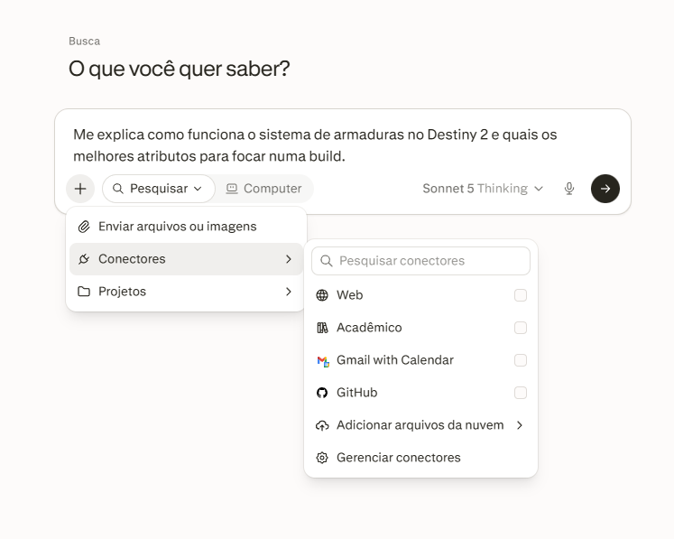
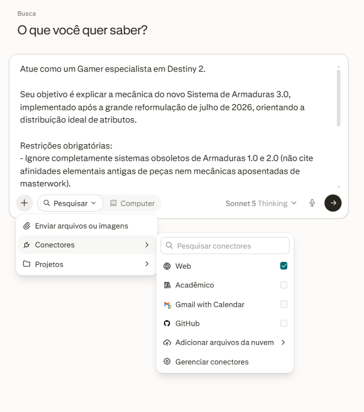

Este documento é preparado para o Laboratório de Revisão do Moodle. Para preservar a avaliação cega, a identificação do estudante é feita exclusivamente pelo sistema do AVA, sem menção de nome pessoal no corpo do texto.
| Parte | O que ela pede | Quanto escrever |
|---|---|---|
| Parte 1 · O ciclo na sua tarefa | Aplicar o ciclo de diagnosticar, mudar e verificar numa tarefa sua em duas rodadas, registrando contexto inicial, resultado, diagnóstico e contexto revisado em cada uma. | Os oito campos da ficha, mais a resposta à pergunta final. |
| Parte 2 · A história que você recebeu | Três perguntas sobre o Caso A (Lorena): o que estava na conversa e o que ficou de fora, o que explica o resultado (componente vs limite) e o que a pessoa deveria ter feito. | Respostas de três a seis linhas para cada pergunta. |
| O Fecho · A ponte para o protocolo | Três campos que resumem a história em forma de regra: o que faltou, quando poderia ter sido evitado e a providência concreta. | Uma linha em cada campo (leva ao Bloco 1 do grupo). |
| Os Quatro Componentes da Instrução (PO-RF) | |
|---|---|
| Papel | Quem escreve e quem lê; governa tom, registro, público e gênero. |
| Objetivo | O que o texto precisa produzir; a função prática que cumpre. |
| Restrições | Limites verificáveis: extensão, o que incluir e o que evitar. |
| Formato | Estrutura em que o resultado aparece: tabela, lista, e-mail. |
| Os Três Limites Estruturais da IA | |
|---|---|
| Limite de Janela | A informação estava disponível, mas ficou perdida no excesso de material, ou não foi enviada. |
| Limite de Domínio | O assunto é recente ou raro; a IA preenche a lacuna com algo plausível, mesmo com fontes à vista. |
| Limite de Verificação | O pedido estava completo e a fonte estava lá, mas ninguém conferiu linha a linha antes de usar. |

rodada_01.png (Offline)
rodada_02.png (Com Busca)Avaliação da Melhora: A evolução foi radical. O Limite de Domínio foi superado pela ancoragem externa (recuperação de contexto da web). As restrições negativas impediram a repetição de alucinações legadas e forçaram a IA a auditar a premissa da pergunta (corrigindo a data e declarando incerteza). O formato de tabela e lista de 3 tópicos foi cumprido com rigor.
Contexto Revisado Definitivo (Versão Otimizada):
O componente que tendeu a ficar de fora nas duas rodadas foi Restrições (especialmente as restrições negativas de exclusão e os limites de extensão textual). Ao formular um pedido, a atenção humana foca naturalmente no Objetivo e no Papel, presumindo que a IA deduzirá os limites do que não deve fazer. Na Rodada 1, a ausência de restrições permitiu a alucinação de mecânicas aposentadas. Na Rodada 2, mesmo após adicionar restrições de veracidade, ainda omiti a restrição de tamanho, fazendo a IA incluir notas marginais extras. O controle do modelo depende de demarcar rigorosamente as fronteiras do que está proibido.
| Campo | Conteúdo da Linha do Fecho (Leva ao Bloco 1 do Grupo) |
|---|---|
| O que faltou | Faltou isolar o contexto relevante (recorte do tema) e explicitar a restrição sobre exceções para contas conjuntas (limite de janela). |
| Quando poderia ter sido evitado | No momento da preparação do contexto antes do envio do prompt, ao colar 60 páginas brutas do manual sem filtro prévio. |
| A providência | Instituir a regra de nunca colar manuais na íntegra: extrair apenas a seção temática específica e exigir checagem ativa de exceções cadastrais. |
| Critério | Para Retomar | Em Construção | Consolidado (Alcançado) |
|---|---|---|---|
| 1. As duas rodadas estão completas | Menos de duas das quatro colunas aparecem preenchidas. | Uma rodada está completa e a outra segue parcial. | As duas rodadas estão completas, com contextos visivelmente contrastantes (offline vs online). |
| 2. Nomeia o que explica o resultado | Aponta só que faltou algo, sem nomear componente nem limite. | Nomeia um componente ou limite, mas não diz qual pesou mais. | Nomeia componentes (Restrições/Papel) e o Limite de Janela, justificando o peso determinante. |
| 3. O Fecho traz providência executável | Repete o diagnóstico sem dizer o que fazer. | Providência genérica, sem ação concreta. | Descreve ação concreta (filtragem prévia e checagem ativa) com momento exato identificado. |